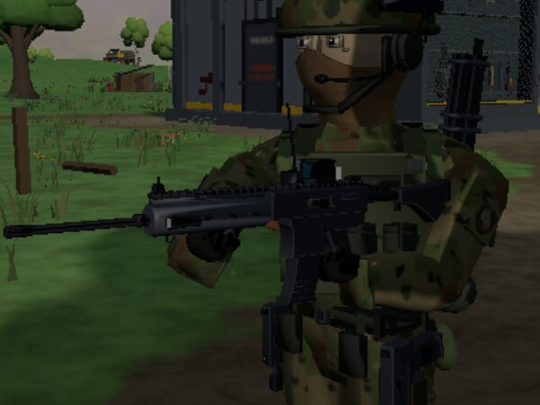
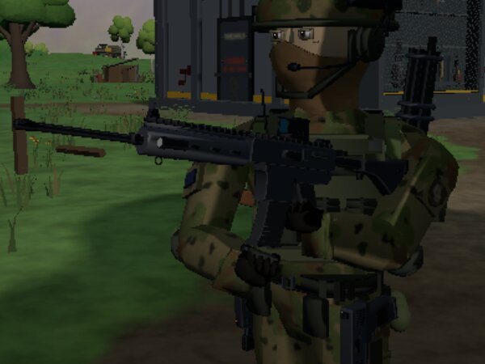
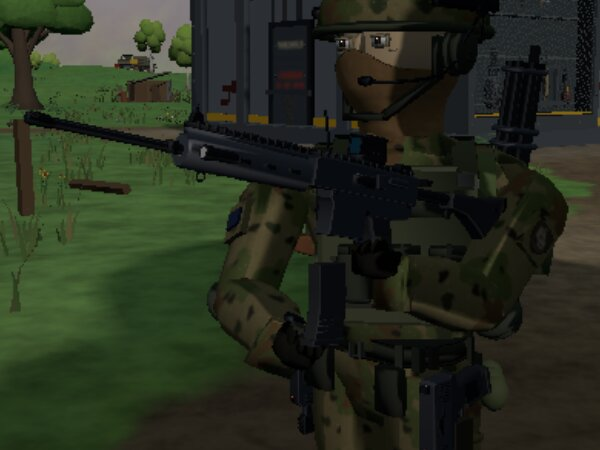
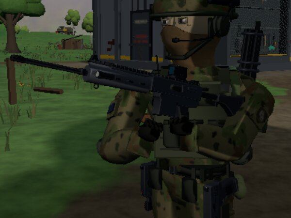
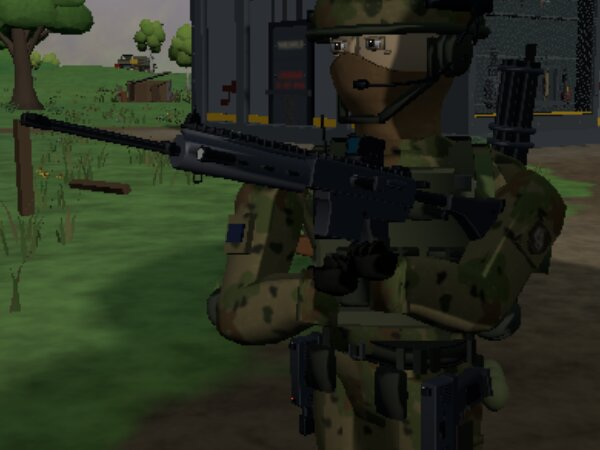
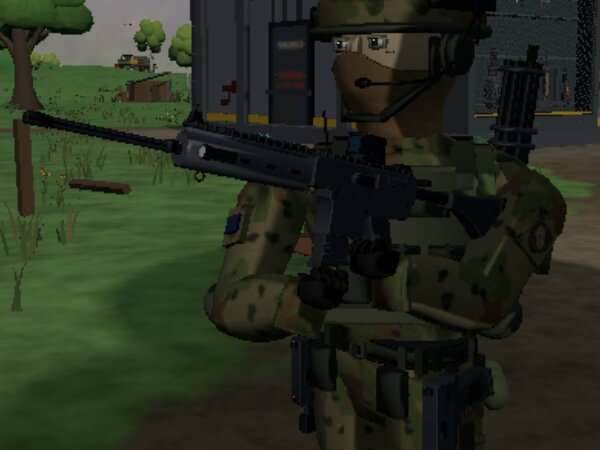
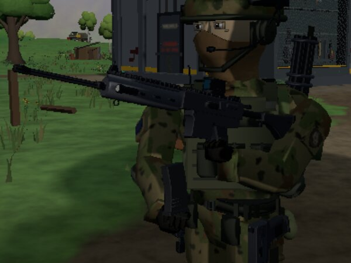
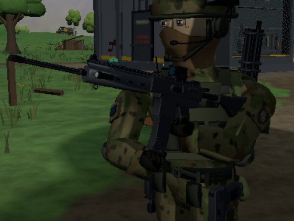
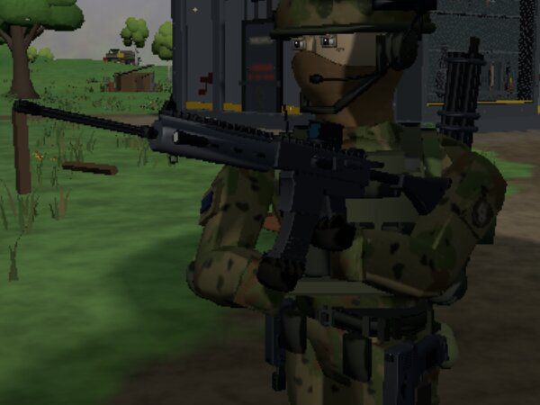
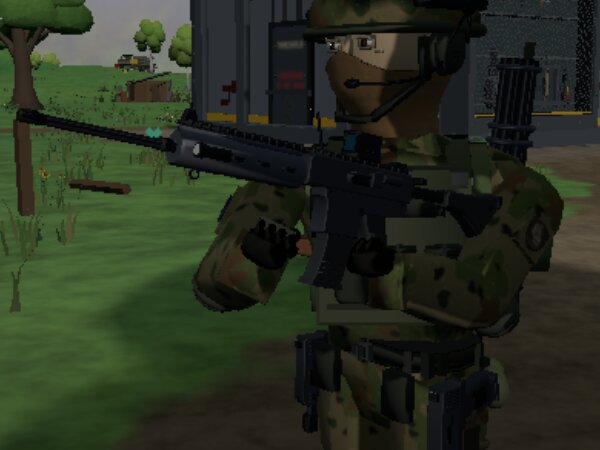

Latest v1 (CL-84 part 2). The GW-4's magazine change held at ten beats, in the real game (a software
renderer), close on his support side, a little in front. The KR-7 and the Breacher-12 use the same path. The numbers under
each shot are measured in that frame: how far the hand is from the clip's path, and while the new magazine is in his hand,
how far its foot is from his palm. Notes go in notes.md.
v1

0.00 · on the forend · magazine: seated · hand to its path 0.000 m

0.10 · the palm on the empty magazine · magazine: drop · hand to its path 0.000 m

0.16 · the empty drops; the hand comes away · magazine: drop · hand to its path 0.000 m

0.25 · out round the front of his chest · magazine: gone · hand to its path 0.000 m

0.32 · at the pouch, reaching in · magazine: gone · hand to its path 0.000 m

0.40 · coming back up, magazine in hand · magazine: hand · hand to its path 0.000 m, magazine foot to palm 0.000 m

0.48 · lining it up under the well · magazine: hand · hand to its path 0.000 m, magazine foot to palm 0.000 m

0.56 · pushing it home · magazine: hand · hand to its path 0.000 m, magazine foot to palm 0.000 m

0.62 · the slap · magazine: seated · hand to its path 0.000 m

0.80 · back to the forend · magazine: seated · hand to its path 0.000 m